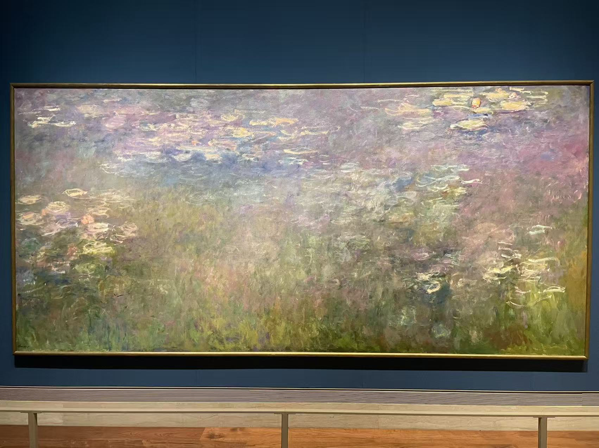
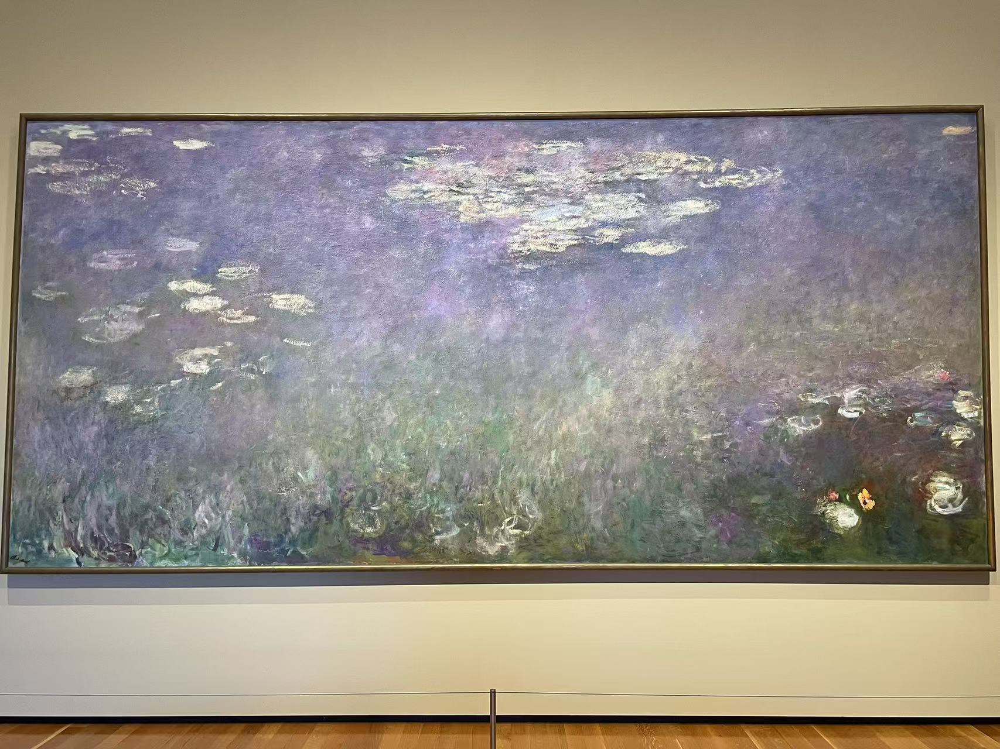

CLAUDE MONET / 展开的大画幅
睡莲（百子莲三联画左幅）
Water Lilies (Agapanthus)

- 作者
- 克洛德·莫奈
- 年代
- 约1915—1926年
- 材料
- 布面油画
- 尺寸
- 201.3 × 425.6厘米
- 收藏／所在
- 克利夫兰艺术博物馆
- 编号／位置
- 1960.81
看画
大片蓝紫水面向两侧展开，右下方的浅色花朵十分醒目，左下则像潜着一层草木。
作品札记与资料
这幅宽约4.26米，是“百子莲三联画”的左幅。与纳尔逊右幅相比，照片中的蓝紫色区域更宽，花团也更疏散；两幅本来同属一组，却各自安排了水面上的停顿和重心。
克利夫兰的修复研究发现，X光显出左下方原有的百子莲叶丛，后来被莫奈覆盖。这项发现把画面与早期工作室照片联系起来；画名中的“百子莲”，如今藏在覆盖的颜料之下。
基本信息据馆方资料与已有现场展签 · 2026年10月核对。